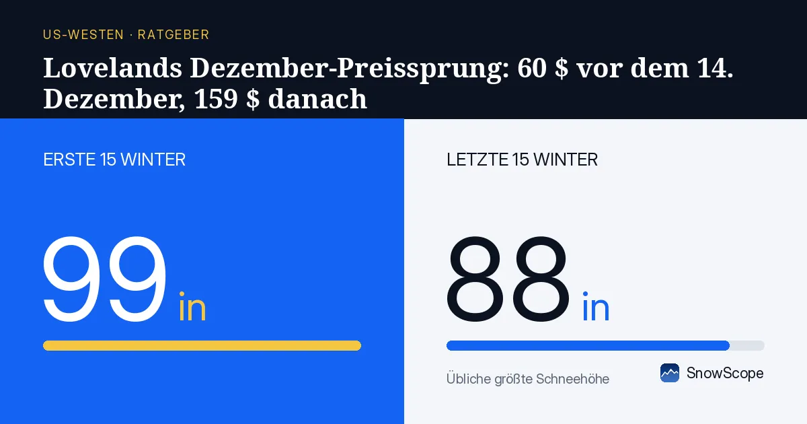

Lovelands Dezember-Preissprung: 60 $ vor dem 14. Dezember, 159 $ danach
Lovelands Preisprung am 14. Dezember ist heftig: 60 $ online werden 159 $ am Schalter. Der Haken: Der Frühdezember-Schnee ist real, aber nicht dick, und du zahlst für Höhe und Hoffnung statt für einen vollständig geöffneten Berg. Die Zahlen zeigen, welche Skis die Aktion wahrnehmen sollten und welche warten sollten.
Die Live-Schneeprognose für Loveland Basin Ski Area in der SnowScope-AppSchneehöhen, Pulverschnee-Alarme und 3D-Karte, gratis.
Was du für 60 $ bekommst: ein Mittelhöhen-Risiko
An einem typischen 1. Dezember auf Lovelands Mittelhöhe (11.780 ft / 3.592 m) hast du 50 cm Schnee. Zwei Wochen später, am 15. Dezember, wächst das auf 74 cm. Der Unterschied zählt: Frühdezember ist fahrbar, aber Mitteldezember ist sicherer für einen ganzen Tag.
Bei der Hälfte aller Winter liegen am 1. Dezember auf dieser Höhe 50 cm oder mehr. Bis Mitteldezember springen die Chancen auf 67 %, also ist die zweite Hälfte des Monats eine solidere Wette. Das 60-$-Ticket bringt dich in ein dünneres, weniger sicheres Zeitfenster.

Höhe ist Lovelands Vorteil in der Frühjahrszeit
Lovelands Lifte reichen von 10.890 ft (3.318 m) bis 12.680 ft (3.866 m), was es zu einem der höchsten Skigebiete in Colorado macht. Diese Höhe bedeutet, dass Frühjahrs-Schnee hier länger hält als an tieferen Resorts. Mittelhöhen-Schnee siedelt sich normalerweise bis Ende September ab; die Basis auf 10.890 ft (3.318 m) bleibt bis später schneefrei.
Am 1. Dezember hat die Basis typischerweise nur 40 cm, während die Spitze 50 cm hat. Dieser vertikale Unterschied ist dein Freund im Frühdezember: Fahre über der Basis-Höhe, bleibe auf präparierten Pisten, und du hast genug zum Arbeiten.

Wie viel dünner ist Frühdezember als Mittenwinter?
Bis 25. Dezember erreicht die Mittelhöhe normalerweise 92 cm. Bis 31. Dezember 99 cm. Das ist 50 % tiefer als Frühdezember. März, Lovelands tiefster Monat, durchschnittlich 137 cm auf Mittelhöhe.
Der Langzeittrend zeigt, dass Frühdezember dünner geworden ist. In den Wintern von 1980-81 bis 1994-95 lag der Mittelhöhen-Durchschnitt am 15. Dezember bei 81 cm. In den letzten 15 Wintern lag er bei 58 cm. Letzten Winter waren es an diesem Datum nur 49 cm.
Das 4er-Paket ändert die Rechnung ab 14. Dezember
Sobald die reguläre Saison am 14. Dezember beginnt, springt der Fensterpreis auf 159 $. Zu diesem Zeitpunkt wird Lovelands 4er-Paket—vier Lifttickets für 299 $—zum besseren Kauf. Das sind 75 $ pro Ticket, was die Kosten pro Tag um die Hälfte senkt.
Wenn du zwei oder mehr Besuche im mittleren bis späten Dezember planst, überspringe das 60-$-Frühangebot und warte auf das 4er-Paket. Der Schnee wird dicker, der Berg offener, und deine Kosten pro Ticket niedriger.
Vergleich: Loveland, Ski Cooper, Wolf Creek
Ski Cooper, bei Leadville, hält Wochentags-Tickets bei 49 $ und am Wochenende bei 99 $. An einem typischen 15. Dezember hat die Mittelhöhe 66 cm—nicht viel weniger als Lovelands 74 cm. Wolf Creek, das schneereichste der drei, hat an diesem Datum 87 cm, berechnet aber 96–110 $.
Lovelands 60-$-Online-Ticket schlägt Coopers Wochenendpreis und Wolf Creeks Tagestarif, auch wenn der Schnee dünner ist. Aber wenn du werktags fährst, ist Cooper mit 49 $ billiger und hat fast gleich viel Dezember-Schnee. Der Preisprung von 60 $ auf 159 $ am 14. Dezember ist Lovelands echter Vorteil: Kauf vor diesem Datum.
Wer sollte das 60-$-Ticket nutzen
Nimm das Frühjahrs-Angebot, wenn du auf präparierten Pisten fährst, 50–65 cm Basen tolerierst und in der Nähe von Denver wohnst. Kauf es online im Voraus. Vermeide den 119-$-Schaltarif—das ergibt keinen Sinn.
Überspringe es, wenn du den ganzen Berg offen haben möchtest, Tiefschnee brauchst oder im Mitteldezember fahren kannst. Nach 14. Dezember kaufe ein 4er-Paket oder nutze einen Indy Pass (Loveland ist Mitglied; Indy Base kostet 419 $, Indy+ kostet 469 $ für zwei Tage bei jedem von über 300 Resorts).
Tipps für Skifahrer
- Kaufe das 60-$-Ticket nur online, nicht am Schalter. Vorkauf ist das gesamte Schnäppchen.
- Fahre im Frühdezember über 11.500 ft (3.500 m); die Basis ist dünn und kann Felsen unter leichter Schneedecke freilegen.
- Bring Windschutz mit: Mittelhöhe ist 11.780 ft (3.592 m) und Dezember-Wind ist in dieser Höhe heftig.
- Ab 14. Dezember ist das 4er-Paket für 299 $ besserer Wert als das 159-$-Schalter-Ticket. Plane deine Besuche bis zu diesem Datum.
- Prüfe die Colorado Department of Transportation (CDOT) auf I-70 und Eisenhower Tunnel-Sperrungen; Frühjahrs-Runs bedeuten Wetterrisiko.
Zu diesen Zahlen
Die Schneehöhen der Skigebiete sind der meiste Schnee in den oberen Hängen am angegebenen Tag; es sind Schätzungen für eine Fläche, keine Messung an einem Punkt. Prognosen können sich ändern. Lies vor dem Freeriden immer den offiziellen Lawinenlagebericht.
Offizielle Lawinenlageberichte: Colorado Avalanche Information Center
Diesen Bericht zitieren
Für Forschung, Lehre oder Presse: Zahlen und Grafiken sind unter CC BY 4.0 mit dieser Quellenangabe frei nutzbar.
SnowScope (2026), Lovelands Dezember-Preissprung: 60 $ vor dem 14. Dezember, 159 $ danach, https://snowscope.app/blog/de/2026/11/loveland-ski-area-december-deal-2026.html, abgerufen am 2026-11-14
SnowScope (Atlas Labs). (2026, November 14). Lovelands Dezember-Preissprung: 60 $ vor dem 14. Dezember, 159 $ danach. SnowScope snow reports. https://snowscope.app/blog/de/2026/11/loveland-ski-area-december-deal-2026.html
BibTeX
@misc{snowscope2026lovelandskiareadecemberd,
author = {{SnowScope (Atlas Labs)}},
title = {Lovelands Dezember-Preissprung: 60 $ vor dem 14. Dezember, 159 $ danach},
year = {2026},
month = nov,
howpublished = {\url{https://snowscope.app/blog/de/2026/11/loveland-ski-area-december-deal-2026.html}},
note = {Published 2026-11-14 17:47 UTC; accessed 2026-11-14}
}· CC BY 4.0 · Methoden, Daten und Werkzeuge →
Loveland Basin Ski Area: Schnee und Temperatur nach Höhe, dieser Winter vs letzter (Werkzeuge) →
Loveland Basin Ski Area folgen
Gratis: eine Nachricht, wenn Neuschnee kommt, und jeden Morgen die Vorhersage.